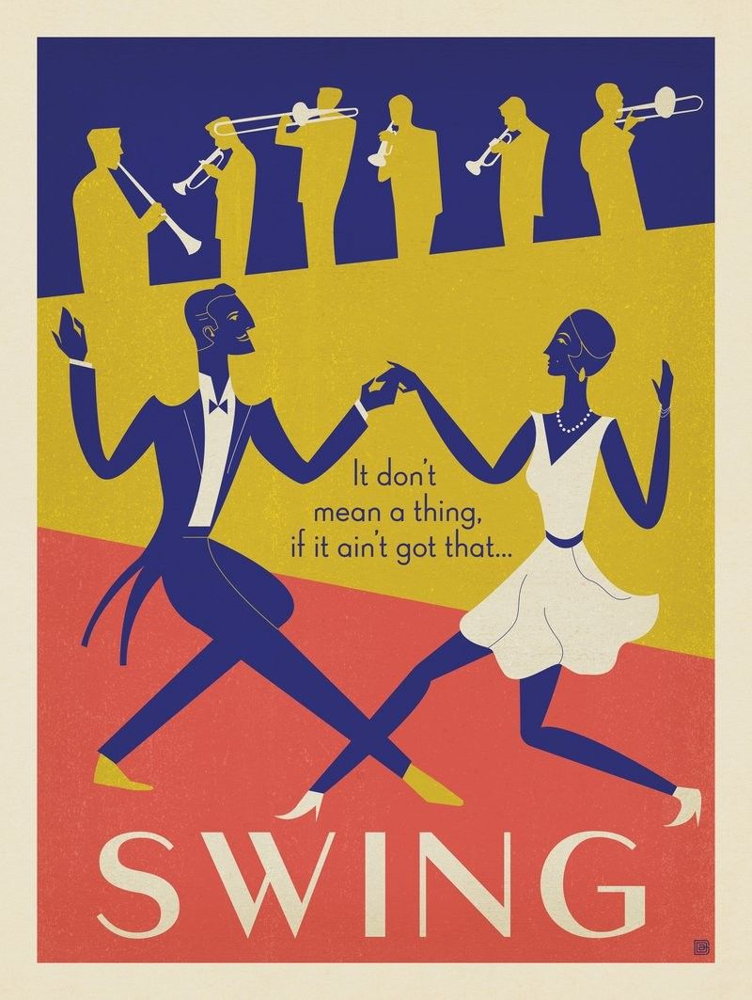
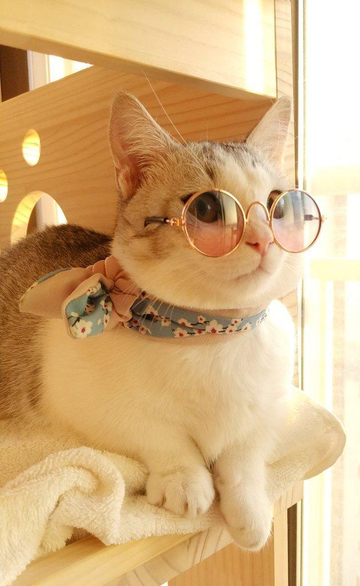

Tia's Castle

| Tianna Victoria Lue-Lim | ||
|---|---|---|
 |
 I was born on Thursday, 28th Novemeber, 2002 at St. Joseph's Hospital in Kingston. I currently live with my parents and younger sister in Portmore, and I am studying Computer Science at the University of Technology, Jamaica. I pride myself on being a good listener and reliable friend.  |
 |
 |
I have always enjoyed reading and computers. I love making and spending time
with friends, even though I'm usually shy at first. My other hobbies include watching shows and movies, singing, listening
to music and playing games. I listen to all kinds of music, but I especially love music from the 60's, Jazz/Swing, Soca, Salsa, Lofi and EDM. I have a hard time choosing favourites, but below is a playlist with some of my favourite songs that I can remember. |
 |
 |
Some of the ones I love the most:
My dislikes include tomatoes, confined spaces, cucumbers and pork. |

|
Personality Test |
||
|---|---|---|
|
I recently assessed my personality using the 16Personalities Personality Test. I think the test is valid because I asked some of my other friends to take it and the results seemed mostly in line with their personalities. The test also feels accurate for me. I am warm and caring in my friendships and love spending quality time with loved ones. However, I do frequently need to take time for myself in order to calm myself and avoid feeling overwhelmed. I also tend to make choices based on my emotions, rather than logic, and I am highly protective of the peoples I care about. Lastly, I am a bit of a perfectionist and am very self-conscious. This causes me to dwell on criticisms and regrets more than the average person. In my opinion, the test described my personality correctly. |
||
| |
||